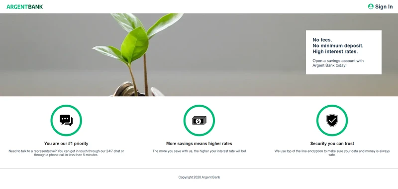

Argent Bank — Application bancaire avec authentification et gestion d’état
compétences utilisées: HTML, CSS, React / Redux / API REST
Création de sites modernes, performants et accessibles
Spécialiste en HTML5, CSS3, JavaScript et React, j’aide les entreprises et particuliers à créer des expériences web uniques et optimisées pour le SEO et l’accessibilité.
Technologies et outils que j’utilise pour concevoir des sites web performants, accessibles et optimisés.
compétences utilisées: HTML, CSS, React / Redux / API REST
compétences utilisées: HTML, CSS, JavaScript, SEO, Accessibilité
Développeur front-end passionné, je transforme des idées en expériences web modernes, performantes et accessibles.
J’ai suivi la formation Intégrateur Web chez OpenClassrooms, où j’ai travaillé sur plusieurs projets concrets dans des conditions proches du monde professionnel. Cette formation m’a apporté une méthodologie rigoureuse et la capacité de m’adapter aux besoins de chaque client.
Aujourd’hui, je conçois des sites performants et ergonomiques, en respectant les standards du web et les attentes des utilisateurs.
Un projet ou une opportunité ? Écrivez‑moi, je vous réponds rapidement.